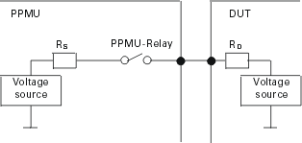

Voltage Force Mode
In the voltage force mode the PPMU will be programmed to force a specified voltage at the pin while comparing the resulting current against specified limits. Before the DC measurement takes place, a set of vectors can be executed in order to condition the device under test. After execution of the pattern the sequencer is set to break state and the state of the last vector will be held during the time of the DC measurement. On the pins to be measured the AC relay is opened and the PPMU relay closed. The specified voltage is forced by the PPMU and the current flowing is measured.
